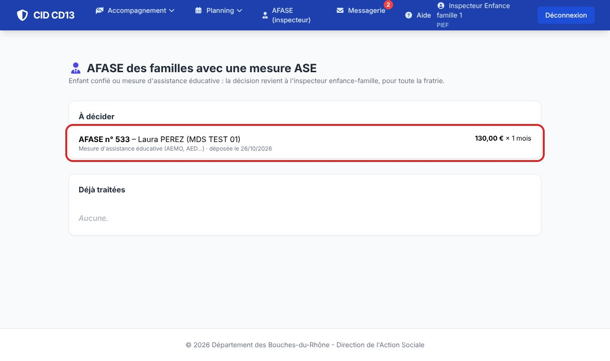
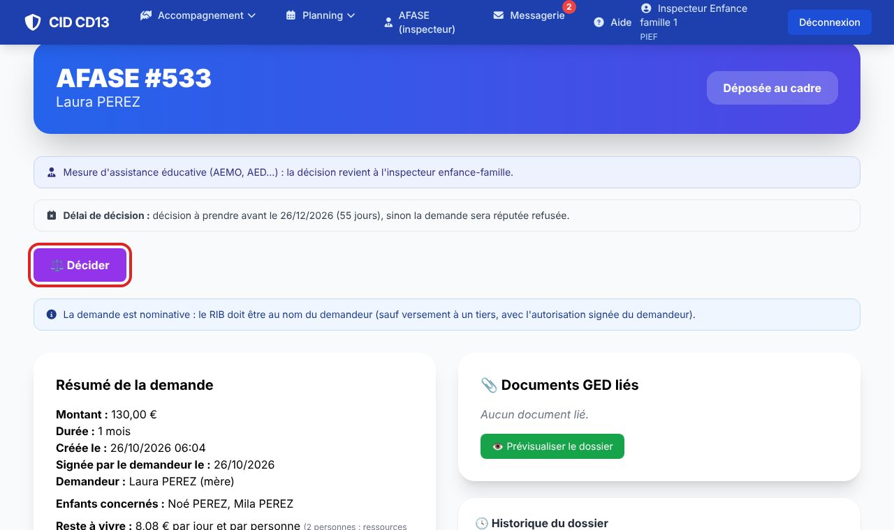

1Ouvrir les AFASE à décider

- Menu AFASE (inspecteur) : les demandes à décider, toutes MDS confondues, puis celles déjà traitées.
- Vous recevez aussi un message CID à chaque dépôt.
2Décider

- Ouvrez la demande et cliquez sur Décider : la page est celle du cadre (Décider une AFASE).
- Après un accord, vous pouvez aussi transmettre le dossier à l'UAGAF (Notifier et transmettre).
Bon à savoir
- Le cadre de la MDS ne peut pas décider ces demandes ; il les voit sans pouvoir les trancher.
- Une mesure de TISF seule ne suffit pas : la décision reste à la MDS.
Et ensuite ?
Cliquez sur une image pour l'agrandir. Le cadre rouge montre où cliquer ou quoi remplir. Toutes les données affichées sont fictives.